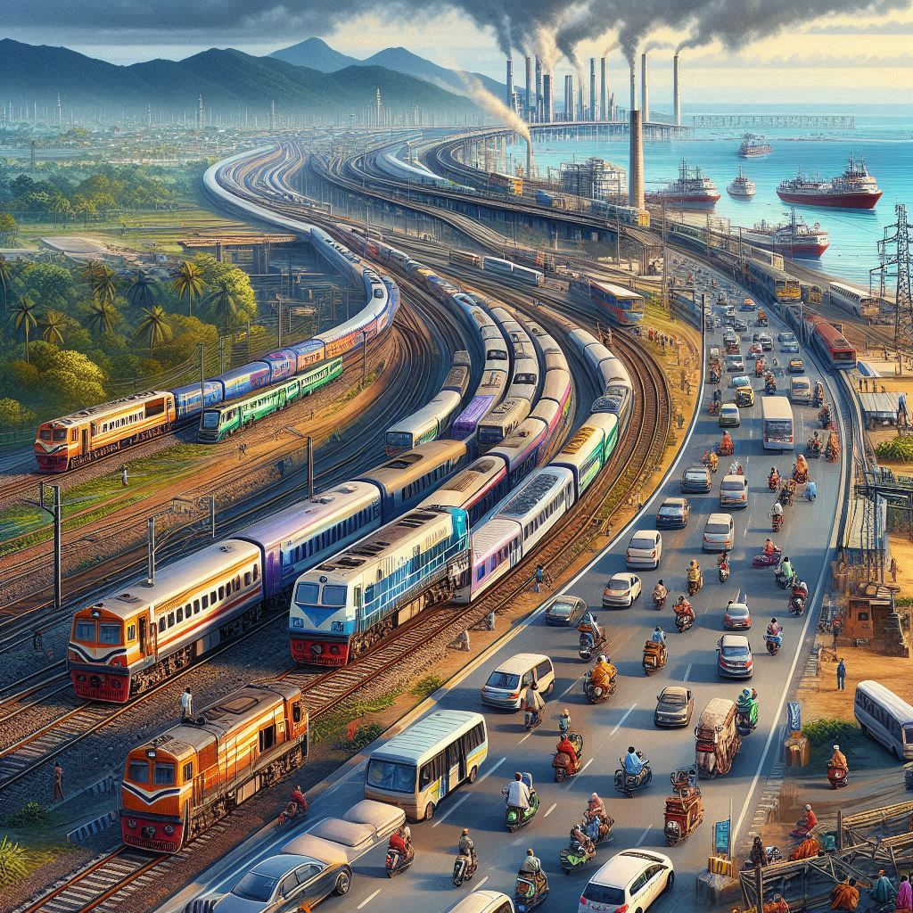
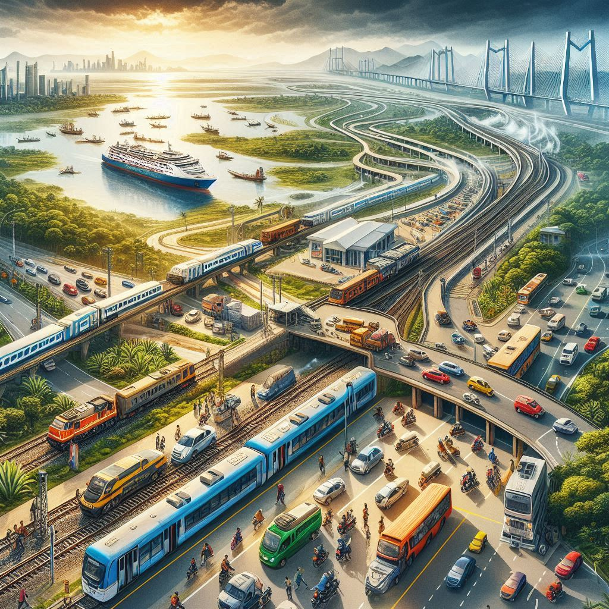

Transportation in Odisha
Odisha, with its diverse geography and growing infrastructure, offers various modes of transportation to facilitate travel within the state and beyond. Whether you're looking to travel by road, rail, air, or water, Odisha has several options to choose from. Here’s an overview of the transportation system in Odisha:
1. Road Transportation
a) National and State Highways
- Odisha is well-connected to major cities in India through a network of National Highways (NH) and State Highways. The major highways passing through the state include:
- NH 16: This is part of the Eastern Peripheral Expressway, connecting the state with Kolkata and Chennai. It passes through cities like Bhubaneswar, Cuttack, Berhampur, and Rourkela.
- NH 49: Connecting Odisha to Rajasthan and passing through cities like Koraput and Sambalpur.
- NH 55: Connecting Cuttack to Sambalpur.
- NH 53: Connecting Paradip to Raipur.
- These highways allow for convenient travel between cities and towns within the state, as well as to neighboring states like West Bengal, Chhattisgarh, Andhra Pradesh, and Jharkhand.
b) Public Bus Services
- State Transport: The Odisha State Road Transport Corporation (OSRTC) operates a network of public buses connecting cities, towns, and rural areas. The buses offer both intercity and intra-city transport.
- Private Bus Operators: Private bus operators provide services between cities like Bhubaneswar, Puri, Cuttack, Rourkela, and Berhampur. These buses vary from luxury buses with air-conditioning to more affordable options.
- Buses to Remote Areas: There are also buses that connect remote tribal areas, though they might be less frequent and can be more basic.
c) Auto-rickshaws and Cycle-rickshaws
- Auto-rickshaws are common in urban areas, providing short-distance transport. In Bhubaneswar, Cuttack, and Puri, they are a popular mode of transport.
- Cycle-rickshaws are also used in some towns and villages, offering a more eco-friendly and affordable way to travel short distances.
d) Taxis and Ride-hailing Services
- Taxis are available in major cities like Bhubaneswar, Cuttack, and Puri for hire. These can be booked at stands or hired for longer trips to nearby areas.
- Ride-hailing services like Ola and Uber operate in larger cities, offering more convenient travel options with apps to book rides.
2. Rail Transportation
a) Major Railway Stations
- Odisha is well-connected by Indian Railways with several key railway stations in major cities:
- Bhubaneswar: The capital city of Odisha has a major railway station and is a key hub for long-distance trains traveling to and from Kolkata, Chennai, Mumbai, New Delhi, and other major cities across India.
- Cuttack: Another important railway station, well connected to cities in the eastern and southern parts of India.
- Puri: Famous for the Jagannath Temple, Puri is connected by rail to other parts of Odisha and India, especially during the Rath Yatra festival.
- Rourkela: An industrial city in the western part of Odisha, it has a major railway station with connections to states like Jharkhand and Chhattisgarh.
- Berhampur: A key city in southern Odisha, it is well connected to major cities like Kolkata and Visakhapatnam.
b) Train Services
- Odisha is part of the South Eastern Railway and East Coast Railway zones, ensuring regular trains between major cities like Kolkata, Bhubaneswar, Cuttack, Puri, Sambalpur, Rourkela, and others.
- Express and Superfast Trains: Odisha is well connected by express and superfast trains to Kolkata, Chennai, Hyderabad, Bangalore, Delhi, and Mumbai.
- Passenger Trains: Local passenger trains connect smaller towns and villages with major cities in the state.


3. Air Transportation
a) Airports
- Biju Patnaik International Airport (Bhubaneswar): The primary international airport in Odisha, Bhubaneswar airport connects the state to major cities like Delhi, Kolkata, Chennai, Mumbai, and Bangalore. It also has international flights to destinations like Kuala Lumpur and Bangkok.
- Veer Surendra Sai Airport (Jharsuguda): This airport caters to the western part of Odisha and connects to cities like Kolkata, Raipur, and Bhubaneswar.
- Berhampur Airport (Proposed): While still under development for commercial operations, Berhampur is expected to have a functional airport to boost tourism and business in southern Odisha.
b) Air Connectivity
- Domestic Flights: Odisha has robust air connections to major Indian cities through both full-service carriers (like Air India and IndiGo) and budget airlines (like SpiceJet and GoAir).
- International Flights: Bhubaneswar is connected to a few international destinations, making it an important gateway for international tourists and business travelers.
4. Water Transportation
a) Ports
- Paradip Port: Located on the eastern coast, Paradip is one of the major deep-water ports of India and is used primarily for the export of minerals and goods. It also plays a key role in shipping and trade.
- Chilika Lake: Chilika, Asia’s largest coastal lagoon, also offers boating and tourism cruises. Visitors can take boat rides to explore its islands, wildlife, and enjoy dolphin sightings at Satpada.
b) Ferry Services
- While Odisha does not have extensive passenger ferry services, ferries are used in places like Chilika Lake, offering a unique travel experience through the beautiful lagoon.
5. Cycling and Pedestrian Travel
- Cycling is gaining popularity in urban areas like Bhubaneswar and Cuttack, with some streets designed to accommodate cyclists.
- Walking is a popular mode of transportation in smaller towns and temple towns like Puri, where tourists often explore on foot, especially during religious festivals.
6. Transportation Infrastructure Development
- Smart City Projects: The Odisha government has launched Smart City initiatives in Bhubaneswar to improve urban infrastructure, including better roads, public transport systems, and traffic management.
- Bhubaneswar Metropolitan Transport Project: Plans are underway to develop better public transportation systems such as BRTS (Bus Rapid Transit System) and metro rail to ease traffic congestion and provide eco-friendly transport.
Conclusion
Odisha's transportation infrastructure is continuously improving, offering efficient and diverse options for both locals and tourists. Whether traveling by road, rail, air, or water, visitors can access major cities, towns, and scenic spots with ease. The combination of traditional modes of transportation like auto-rickshaws and modern facilities like airports and railways makes Odisha accessible and convenient for travelers.